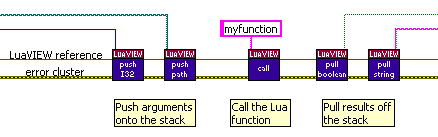
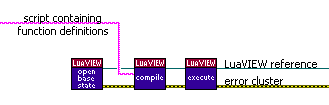

This appendix details how to create LabVIEW-callable Lua functions. This capability allows Lua to be chosen as the implementation language for some self-contained subVI or VI object (LabVIEW 2 style global). This is of value because Lua and LabVIEW have quite different strengths and weaknesses: an algorithm that is difficult to implement in LabVIEW may well be easy in Lua, and vice versa.
LabVIEW-callable Lua functions cannot call back into LabVIEW. This restriction allows a
standard Lua calling mechanism to be used which results in better performance
and a simpler API. A future LuaVIEW release may add a separate mechanism that
does allow for LabVIEW-callable Lua functions to call back into LabVIEW.
LabVIEW-callable Lua functions can use the functions in the various C libraries.
A small set of C functions in the "lv" C library that involve
interruption of the virtual machine cannot be used. These functions are exit,
wait, lv.addcleanup, lv.setyielding,
and lv.getyielding. As opposed to scripts, execution
of function calls is not interrupted regularly to allow for cooperative thread
scheduling. Thus, a LabVIEW to Lua call consumes a thread for its duration.
Typically, this is not a problem since LabVIEW has multiple threads per
execution system. When running LabVIEW in single-threading mode, or when calling
Lua from the one-and-only user-interface thread, thread contention can occur.
In such cases it is advisable to implement only brief functions.
To call Lua, use the Push, Call, and Pull API VIs as follows:

Both the push and pull API VIs are polymorphic. The supported data types and their representations and conversions are detailed here.
Lua functions must be defined prior to being called from LabVIEW. Use Open Base State to obtain a LuaVIEW state suited for calling and subsequently Compile and Execute one or more scripts containing function definitions:

Scripts containing function definitions are subject to the same restrictions as the functions themselves.
For performance reasons and to allow data that persists between calls, it is desirable to avoid having to redefine functions for each call. This can be done by caching the LuaVIEW reference for which function definitions were made. Also, a Lua virtual machine instance as specified via a LuaVIEW reference supports only a single operation at any one time. Consequently, no simultaneous calls can be performed on the same LuaVIEW state. When you want to implement some utility subVI or VI object using Lua that must be available to multiple callers, some extra work is required to serialize calls.
Both requirements can be met by bundling all functionality for a particular Lua function or set of Lua functions into a non-reentrant subVI containing an unitialized shift register that holds the LuaVIEW reference. The implementations of the examples discussed in the next sections show how to do so.
LuaVIEW can automatically convert between Lua and LabVIEW data types. The Lua compiler can read text-based data definitions. Thus, almost all requirements for automatically converting LabVIEW data to and from text are met. All that is required in addition is a means of exporting Lua data as text. The luaview/examples/Serialization.vi example demonstrates how Lua functions, called through subVIs, can be used to perform one-step conversions in either direction. Note that the conversion to text is relatively simple only by virtue of a recursive implementation, which is easy to do in Lua.
Since part of the job of the Lua parser/compiler is to parse arithmetic expressions, Lua can be abused as an expression evaluator. The luaview/examples/Calculator.vi example demonstrates a simple implementation thereof. It is notable for what is does not do:
The luaview/examples/Expression Demo.vi example shows how to dress-up expression evaluation to do all of the above. It makes use of a VI (luaview/examples/calling lua/Caching Expression Evaluator.vi) that can be used in the very same manner as a VI object (LabVIEW 2 style global): it has multiple methods and operates on retained state. Only when examining the diagram of the VI does it become evident that Lua instead of LabVIEW is used to implement the methods and retain state. Note that a Lua table is used as the expression cache. Lua tables allow for the easy implementation of efficient dynamic data structures: they can be interlinked by reference and grow automagically as elements are added without becoming slow to access.
When reusing a LuaVIEW reference, you must make sure that the stack is empty at the end of the operations associated with a call, otherwise the next call will pass wrong arguments. Normally, this is not an issue: an error that occurs during the function call, or while pushing arguments or pulling results, causes the stack to be automatically cleared. However, when you place some other subVI that can output an error between the first push and the last pull surrounding a call, there is a risk that the stack does not get cleared. For this reason, it is advisable to not interleave the push, call, and pull sequence. Otherwise, it is mandatory to call Clear Stack in case of an error.
Sometimes you cannot be sure of the number of results returned by a Lua function, in particular when you allow other programmers or the application user to implement the function. In such a case, or simply as an additional check, it is possible to specify the required number of results when using the Call API VI. This is done by wiring the optional required results input. Any mismatch between the number of required and returned results will cause a descriptive error to be thrown, and the stack to be cleared. When the function is allowed to return a variable number of results, query the number of Stack Elements on completion of the call and pull results accordingly.